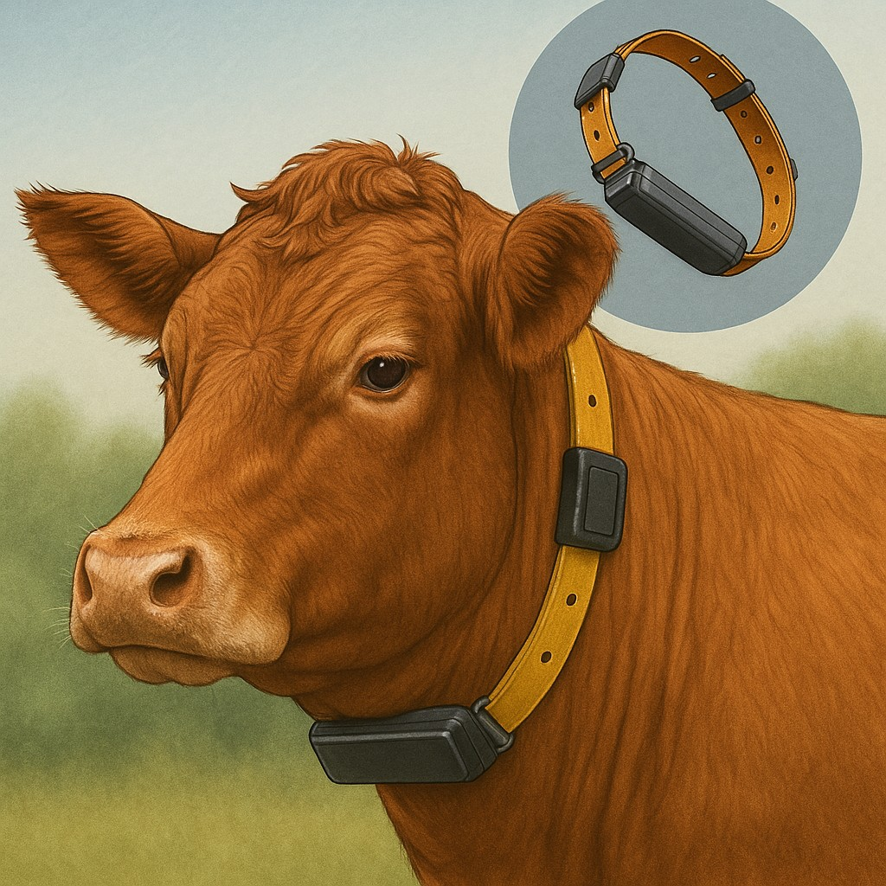

ABOUT
Pawstrack is a website designed to track the health and activity of your livestock using wearable technology. Built as part of a college project, this platform provides a modern interface to monitor essential vitals, ensuring better care and health management for animals.
We designed Pawstrack with a vision to empower farmers and caretakers with easy-to-understand, real-time health insights. Our goal is to bridge technology with animal care by offering a platform where digital health records can be maintained and monitored effortlessly.
The system is intuitive, mobile-friendly, and built with responsiveness and accessibility in mind. It is tailored for those who seek to elevate their animal healthcare practices using simple yet smart solutions.
Learn More
DATA INSIGHTS
Pawstrack aggregates and displays key data from livestock wearables, including heart rate, temperature, and movement.
The intuitive dashboard helps users quickly identify irregularities or patterns, enabling preventive action and better health outcomes.
FEATURES

- ✔ Real-time tracking of livestock vitals
- ✔ Alerts for abnormal health indicators
- ✔ Mobile-responsive interface
- ✔ Simple, secure data access and history
- ✔ Designed for ease of use by farmers and caretakers
- ✔ Livestock Location Tracking
- ✔ Data Insights
Our platform is designed to be user-friendly, ensuring that even those with minimal tech experience can navigate and utilize its features effectively. Pawstrack is not just a tool; it's a partner in livestock management.
Explore Features
Livestock Location Tracking
Pawstrack provides GPS-based location tracking to help users know the real-time location of their livestock. This feature ensures safety, reduces the chances of lost animals, and improves herd management, especially across large farmlands.
Contact Us
If you have any questions, suggestions, or would like to collaborate, feel free to get in touch using the form below or email us at
pawstrack@example.com.